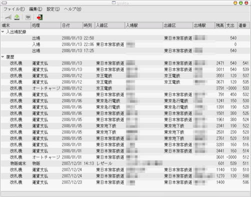

gsuica
概要
- PaSoRi (MODEL RC-S320) を使って Suica の履歴を表示、保存するためのプログラムです (2012/05/01 更新)。
- PASMO や ICOCA の履歴も (多分) 表示できます。
- 動作には Ruby-GNOME2,
Ruby, libpafe (version 0.0.7 以上),
libpafe-ruby (version 0.0.7 以上) が必要です。
動作環境
- Ruby-GNOME2 (version 1.1.3 で動作確認)
- GNOME (version 3.2 で動作確認)
- Ruby (version 1.9.3p0 で動作確認)
- PaSoRi MODEL RC-S320
ダウンロード
gsuica
スクリーンショット

使い方
- 起動して「読込」ボタンを押すと履歴が読み込まれ、表示されます。
- 後述の駅名データを保存してあれば駅名なども表示されます。
- 未登録のデータは「編集(E)」-「編集(E)...」で登録できます。
- 「保存」ボタンを押すと、表示されている履歴を CSV 形式で保存できま
す。
駅名データベース
IC SFCard Fanで配
布されている「店舗・駅コード情報データベース」を利用することで、駅名など
の表示ができます。下記手順にしたがってデータベースを保存してください。
- IC SFCard
Fanの「サイバネ駅コード調査データベース」から「Excel 形式で保存
(汎用)」でExcel ファイルを入手します。
- 上記ファイルを StationCode0.csv, StationCode1.csv,
StationCode2.csv, StationCode3.csv として文字コードを UTF-8 にして
CSV形式で保存します。
xlhtml
を使うと下記のコマンドで CSV 形式に変換できます。
xlhtml -csv -xp:0 -m ~/StationCode.xls > StationCode0.csv
xlhtml -csv -xp:1 -m ~/StationCode.xls > StationCode1.csv
xlhtml -csv -xp:2 -m ~/StationCode.xls > StationCode2.csv
xlhtml -csv -xp:3 -m ~/StationCode.xls > StationCode3.csv
- データを ~/.gsuica/station_code/ に保存します。
- CSV への変換、文字コードの変換、所定のディレクトリへのデータの保存
を行うスクリプトを作りました。
station_code_conv.sh
sh station_code_conv.sh StationCode.xls
と実行します。
注意
- 駅名などが正常に表示されない場合、プログラム側に問題がある可能性が
大きいと思われます。このプログラムを使用した結果についての問い合わ
せは IC SFCard Fan ではなく下記連絡先にお願いします。
- このプログラムは完全に無保証です。
謝辞
Link
履歴
- 2012/05/01 version 0.9.1
- 設定ダイアログを開くときに異常終了していた不具合の修正。
- 2012/05/01 version 0.9.0
- 最新の Ruby-GNOME2 で動作するように修正した。
- Ruby 1.9 で動作するようにした (1.8 では動作しない) 。
- 2011/09/10 version 0.05
- 駅名の検索が正常にできないことがあった不具合の修正。
- 2008/12/27 version 0.04
- 駅名データベースの仕様変更に対応。データベースは新しいものと差
し替えてください。
- 2008/03/20 version 0.03
- FeliCa
Library のドキュメントを参考に端末種、処理の種類を追加。
- Suica データの読み込み、駅名データベース参照部分を大幅に書き直し。
- 駅名データベースの CSV ファイル名を変更 (StationCode1.csv ->
StationCode0.csv など) 。
- xlhtml で変換した CSV データだと正常に読み込めなかった不具合の
修正。
- 駅名データベースを Marshal で保存し、２回め以降の起動が高速にな
るようにした。
- 2008/02/17 version 0.02
- Felica#foreach を利用するように変更 (libpafe-ruby version
0.0.4 以上を利用してください)。
- 2008/02/03 version 0.01
連絡先
ZXB01226 at nifty.com
戻る
{kind=link}